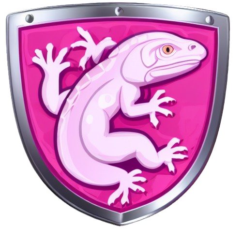

Zsombor Szocs - Week 9-10 Challenge
Introduction
In this Week 9-10 Chllange our job was to develop and fine tune a stable diffusion model using Python to generate images of gaming textures.
We used Dream Booth to generate unique shields as game textures, using ten already made shields which was collected from unity asset store!
Method
The stable deffusion model was trained on Google Colab Pro on a dataset of shields with captions! We created a custom key world 'Loebia' for the word shield.
Results
Below there are the prompts and the results as pictures. We used the 'Euler a' sampling method!
First
'A pale red loebla with a golden icon of a sword and a silver rim'
Second
'A green loebla woth a light green icon of a sword and a grey rim around it'
Third
'A green loebla with a light green icon of a deer'
Fourth
'A bright pink loebla with a light pink icon of a lizard'
